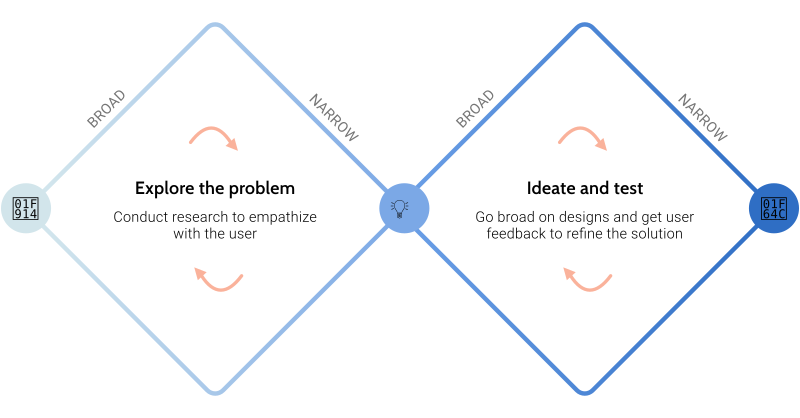
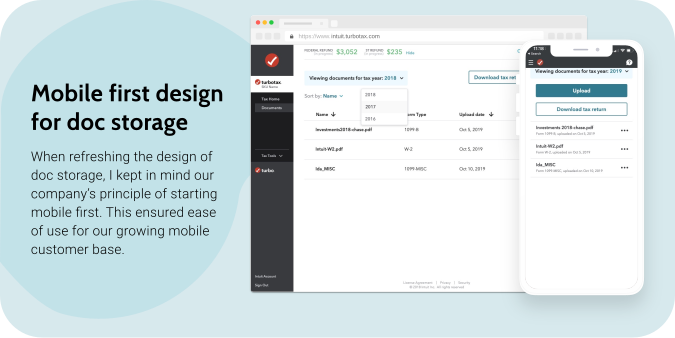
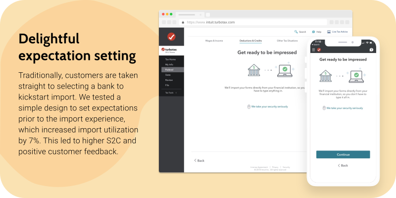
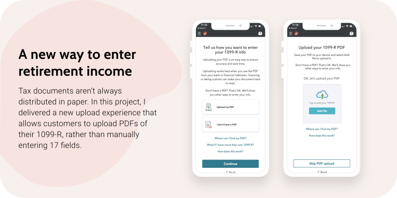
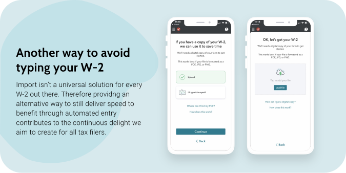
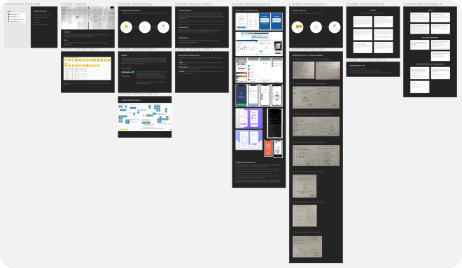
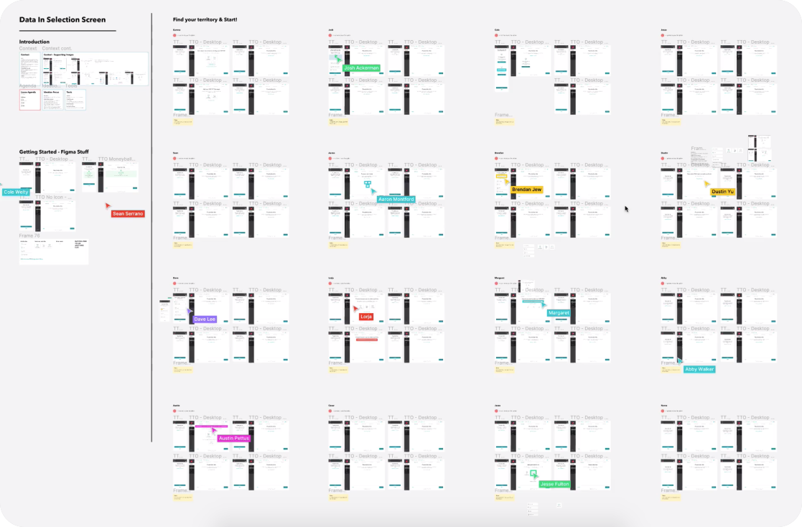

An effortless tax prep experience
Overview
Working at Intuit has been one of the most eye opening experiences I’ve had, and I’m honored to be part of the company’s mission of powering prosperity around the world. After joining this company a few months after graduating from the University of Washington, I’ve been exposed to one of the most daunting financial tasks that every American takes on in January, taxes.
There are many adjectives that people use to describe taxes, including difficult, painful, time-consuming and tedious. I’ve sat through numerous research sessions, watching customers use TurboTax to file their return and wait tirelessly to receive one of their biggest paychecks of the year, their refund.
One of the most common pain points I’ve observed customers endure is the drudgerous task of typing in values from their tax forms into input fields in TurboTax.
The problem
“Take a look at Box 1 on your W-2, enter the value in TurboTax.” Okay, this seems like a straight-forward task, but imagine doing this for over 12 fields, and if you have more forms then multiply that by however many forms you have. Not to mention, some forms have several pages and even more values you’ll have to enter. Through research sessions and contextual inquiries, I’ve seen the pain of transposing information often reflected in heavy sighs, water breaks, avoidance of finishing their taxes, and remarks like “this is going to take forever.”
Not only is typing drudgerous, but it’s also extremely error-prone. How often have you mistyped something in a message to a friend, or in an essay? Now imagine the repercussions of a wrong value impacting how much financial return you received for the taxes you paid, forcing you to amend those values and re-file. Accuracy is a necessity when it comes to doing taxes.
All in all, the painfully time-consuming task of manually entering information can have negative side effects on a customer’s financial situation. With that in mind, our team at TurboTax re-imagined the way that customers can enter their information with ease and speed.
My Role
For 4 months, I worked on a small team that dedicated time to learning and experimenting with new experiences that would accelerate the distribution and benefit of automated data entry experiences. I led the design for document management experiences, as well as laying the foundation for expanding and scaling automated entry methods into more areas of the product. As the sole designer on the team, I was responsible for taking these experimental insights into a brand new dedicated scrum team. I worked with product management and development to help inform the 1 year roadmap for our new team, and present our progress and work to senior leadership.

Automated entry experiences
TurboTax has been the lead DIY tax prep software for over 30 years. With this type of history, it’s exciting to finally see the company invest in a team that will make automated entry (import, upload, image capture), available for more customers’ tax situations.

Structurally, customers enter their information into TurboTax on a form by form basis. Our team’s vision is to help remove the burden of manual entry by utilizing a suite of widgets that allow customers to automatically enter their data.
To streamline the experience, we also reviewed the end to end experience of bringing tax forms to TurboTax, which is why we also set out to redesign our legacy document storage solution and imagine a more streamlined experience. By recognizing the journey customers have with their tax forms, we were able to envision a future where customers have the flexibility to do their taxes however they choose. But with every idealistic vision comes the realistic need to scope and plan our next steps.
Balancing the technical landscape against the customer's needs
As the sole designer, I knew that the best way to create impact in a technologically heavy world would be to understand how these capabilities were architectured. I’ve worked with 4 different development teams to dive deep and dissect the shared ownership, benefit, and dependencies our team shared with 3 other development teams. The lesson here is that in order to actually get the company to our 3 year vision, we needed the cooperation, investment, collaboration, and alignment of a variety of designers, developers, product managers, and members of leadership.
Design Process
My design responsibilities were split between delivering updated designs to elevate legacy experiences and strategically exploring where we need to be by the end of the next fiscal year.
When it came to updating legacy experiences, I relied heavily on auditing existing experiences, analyzing historical user research, performing competitive analyses to uncover best practices, and incorporating reusable components from our design system. Because this problem is ancient, the pain point and insights have been carried over year over year giving us the opportunity to learn from past efforts.
For newer experiences, I went broad by listening and empathizing with real customers, sketching, running design charettes, and guerrilla testing concepts at coffee shops and shopping plazas. I brought a lot of outside-in inspiration to spark excitement about the future of automated data entry.
For every individual project I worked on, I utilized the double diamond design process to deliver the best solution for customers:

Present day impact
Document storage
I led the re-design of MyDocs—TurboTax’s legacy document storage solution. In the redesign I managed to uplevel the access point into the product’s first level of navigation to drive awareness and use at the start of tax prep. I first started by looking back on historical insights from prior research to move quickly, then documented user expectations and delighters.

This past year, we saw an increase in the amount of users navigating to this area of product, and uploading documents. The redesign was also mobile-first, to ensure ease of use while switching devices.

Although the outcome isn’t perfect, our team managed to land the plane on an MVP solution that still brought a delightful experience to our customers. The more that we can actively engage and observe how customers utilize our technology, the more we can use this customer insight to inform our roadmap of where document management flourishes to.
Streamlining the import experience
Import is known for being one of the magical capabilities that allows customers to enter their tax information in the snap of their fingers. The ownership of this experience though, is fragmented and involves other teams which reflects in what customers see and feel. Working with centralized teams and familiarizing each other with our concerns and goals has helped streamline the experience and smoothen out any bumps.
The first thing we observed when customers went through these experiences was a lack of context, which resulted in 2 things:
- Abandonment from automated entry
- Astonishment at the benefit of actually utilizing import
I started out by sketching my ideas, to give our team something to discuss and just align against a few concepts.

We wanted to set expectations and see if that would encourage more customers to choose the route of effortlessly getting their data entered. We A/B tested a context setting screen to determine whether or not benefit and context messaging would help customers.

This resulted in higher customer confidence to outsource the task to manual entry to TurboTax, reflected in higher utilization of import and conversion through e-filing.
Testing upload as an alternative entry method
Although import may seem like the tried and true automated data entry method, there are several customers who choose not to use it for a variety of reasons. Because of this, we’ve needed to expand our suite of automated methods, to meet the point of convenience for customers bringing both tangible and digital documents to the product. Enter document upload and extraction…
We went broad on a variety of ways to introduce document upload as an option for our customers, but prioritized the customers needs and used technical constraints to deliver a flow that would be A/B tested. We repeated this exercise for a variety of topics, and are continuing to do so for more tax forms. This past year, I led the design exploration and implementation of document upload for W-2 and 1099-R.


What we learned from testing upload experiences, was that customers do have an appetite for this, but the overall implementation requires more investment from development to reduce the constraints (accepting more file types, solving for different tax form layouts, etc.) and improve the performance.
Future thinking
With the advancement of pre-existing experiences, I also dedicated a decent portion of my time to imagining the future of automated data entry, which is what our team is focused on building right now.
We first started thinking about how to scale and expand the benefits of automated data entry to more customers. We held a design sprint to explore all our options and get quick customer feedback on concepts.

After holding this design sprint, our team aligned against principles and goals for the year with a more concrete idea of how we manifest success. This then led us to the goal of creating reusable patterns and assets, to help our teams quickly deliver time-saving opportunities to our customers. Defining a patternized approach is what’s going to help our team actually deliver an effortless tax prep experience, where users don’t have to rely on transposing information and dedicating days on end to do their taxes.
Currently, I'm working on developing the patternized selection experience that will be extendable to all tax forms, to allow customers the ability to choose how they enter their data. I've held design charettes to get the best thinking from other designers on my team, and go broad on a variety of options.

Final thoughts
As you can tell, we have a long way to go to reduce the effort it takes to file a tax return, but our team has remained hopeful through the challenges and unexpected obstacles that we’ve faced. Overall, this journey has brought a bunch of teams closer together to unite and actually create impactful experiences.
Here are my biggest takeaways:
- Make sure design has an eye on the future: As someone who has started leading design for this initiative very early in their career, I’ve learned that I can’t just focus on delivering experiences for right now. It’s important to remember what end to end vision you’re working towards, to make sure that every design you work on is a step in the intended direction.
- Communication and alignment is key: With the experience of working with centralized teams, and a variety of development teams it’s important to recognize the responsibilities and goals your teammates have. Design has the power to tell the story of a shared vision, and communication that is key to being an efficient and impactful designer.
- Embrace hardship and ambiguity: I’ve learned that the key to finding clarity, is to show rather than tell and explain. Through this project, I’ve repeatedly found myself lost and the best way to align and resolve issues is to show people my thoughts through mockups, sitemaps, prototypes and start asking questions. Rather than waiting on someone else to try and communicate our thoughts, it’s better to create working documents we can all look at, to iterate on solutions.